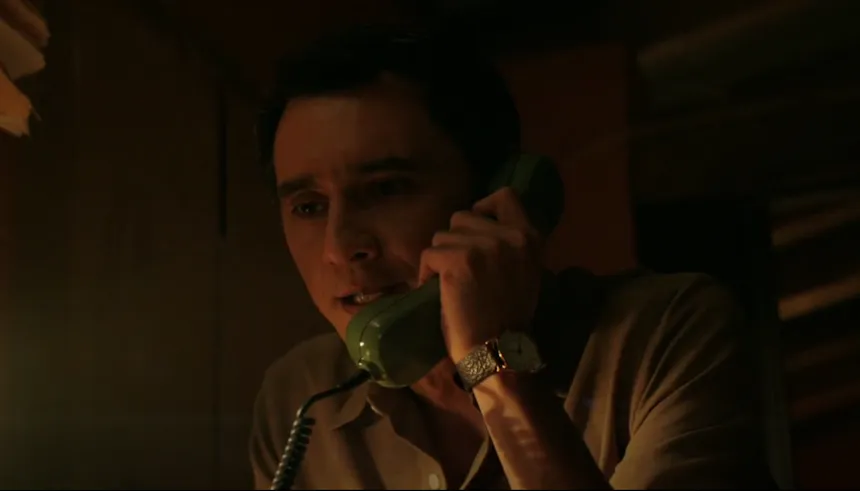
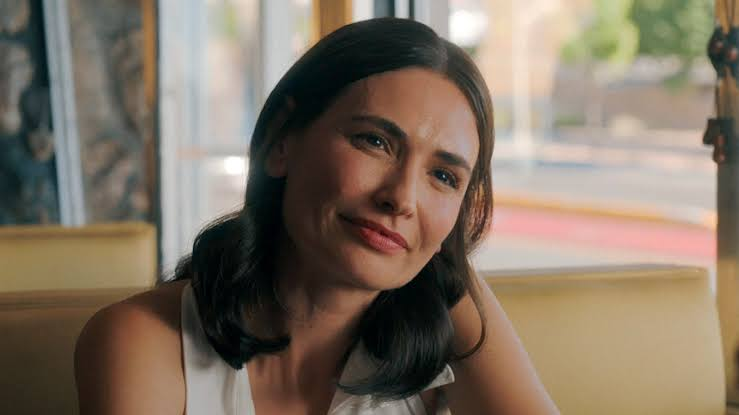
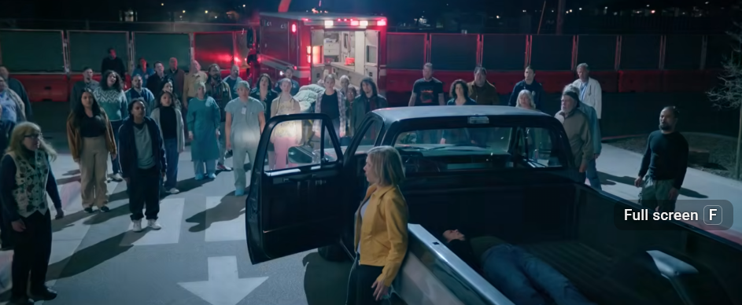
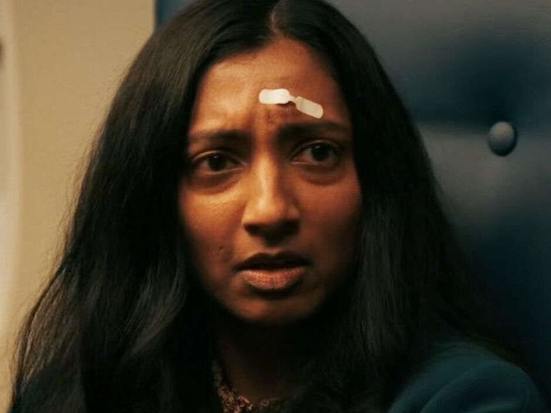
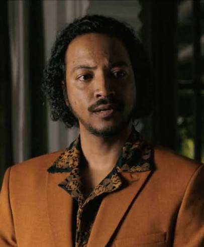
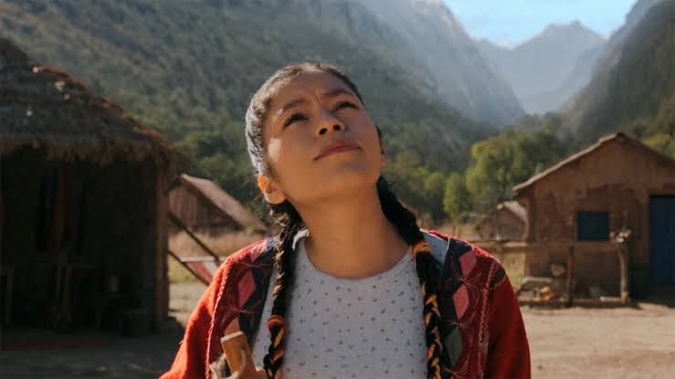
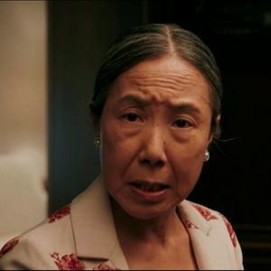
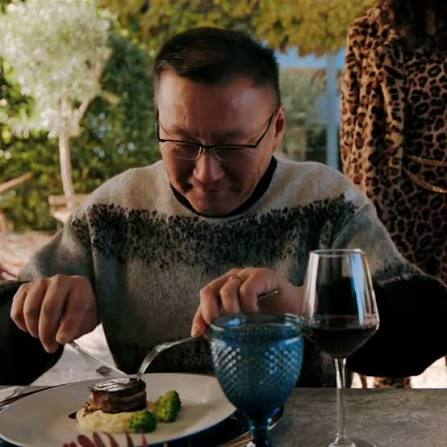

Characters
Main Characters

Carol Sturka
"A bitter fantasy-romance author who inexplicably finds herself as one of the last non-hive-minded humans on Earth."

Manousos Oviedo
"A Colombian-Paraguayan self-storage facility manager, and one of the non-English-speaking immune."

Zosia
Carol's chaperone post Hivemind and a member if the Hivemind that currently controls the Earth.


Laxmi
One of the six English-speaking Immune, a mother from India who cares deeply for her Others family. She is immediately antagonistic toward Carol due to the recent death of a loved one.

Koumba Diabaté
The sixth and last non-hive-minded person capable of English to arrive at the meeting of the Immune minds; a hedonistic gentleman from Mauritania.

Kusimayu
The youngest of the English-speaking Immune, a Peruvian teenager who desperately wants to join The Others to be with her family.

Xiu Mei
An adult woman from China who is one of the six Immune individuals capable of conversing in English.
